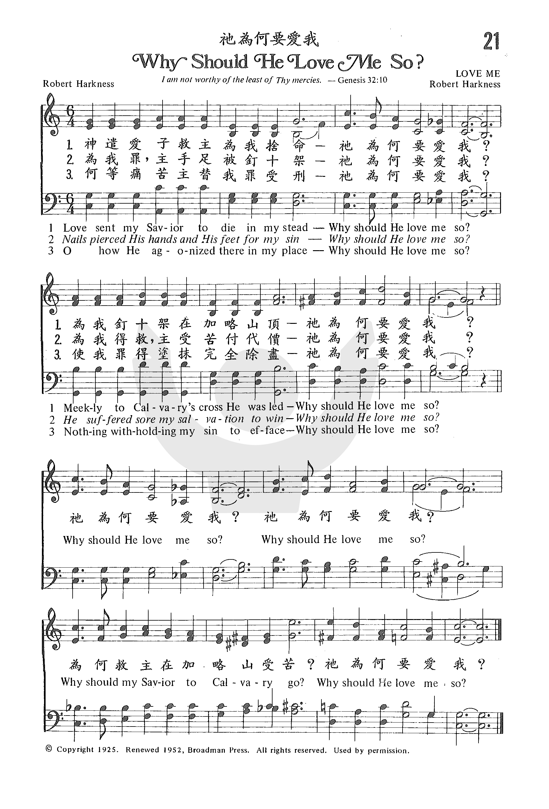

|
|
|
|
|
021 祂為何要愛我 |
|
https://www.zanmeishige.com/tab/25338.html?songbook=1&index=21
 |
|
|
|
|

1279 Why Should He Love Me So _Robert Harkness 祂为何要爱我
|
|
|
|
|
021 祂為何要愛我 |
|
https://www.zanmeishige.com/tab/25338.html?songbook=1&index=21
 |
|
|
|
|

LX1279 Why Should He Love Me So 祂为何要爱我
| Text: | Why Should He Love Me So? |
| Author: | Robert Harkness |
| Tune: | LOVE ME |
| Composer: | Robert Harkness |
| Short Name: | Robert Harkness |
| Full Name: | Harkness, Robert, 1880-1961 |
| Birth Year: | 1880 |
| Death Year: | 1961 |

After attending a revival meeting by Reuben Torrey and Charles M. Alexander, Harkness became Alexander’s pianist. He came to Christ shortly thereafter (on a bicycle, he said), and made several round the world tours with Torrey and Alexander.
Harkness was especially well known for his program The Music of the Cross, and as the author of correspondence courses in hymn playing. He wrote over 2,000 hymns and Gospel songs in his lifetime.
(hymntime.com/tch)
| Title: | [Love sent my Savior to die in my stead] (Harkness) |
| Composer: | Robert Harkness |
| Meter: | 10.6.10.6 with refrain |
| Incipit: | 55566 63335 17655 |
| Key: | B♭ Major |
| Copyright: | Public Domain |
Robert Harkness, 1880–1961
神爱世人，甚至将祂的独生子赐给他们，叫一切信祂的，不至灭亡，反得永生。（约 3:16）
这是一节相当熟悉的经文。神爱世「人」！神为什么爱世「人」呢？世「人」有什么可爱？诗篇 8:4 诗人讽刺地说：「人算什么？祢竟顾念他！世人算什么？祢竟眷顾他！」
科学家研究「人身」的原料，说一个人不值两块美金。可见人真是算不得什么？但是约翰福音却强调说：「神爱世人」！科学家虽然说，人不值钱；诗人虽然说，人算不得什么，但是，「人」竟被「神」爱上了，此中定有大道理！人能够被神所爱，因为人是神「创造」的。这就是「人的秘密」。
创世记第一章第二章记载神创造天地万物的情形，说「人」是一切创造之物中最后被创造的。这是因为神造人最费工夫，也因为人是神造天地万物的中心。
本诗的词和曲皆由 Robert Harkness 所作。1880 年 3 月 2 日生于澳大利亚的 Bendigo ，1902 年当
Torrey-Alexander 布道团在该国举行布道大会时，他们说服他加入布道团，并担任司琴，经过六年与该团同工后，他加入了 J. Wilbur
Chapman 之布道团及圣经研讨会。
Robert Harkness 被公认为当时最好的福音钢琴家。作曲及改编共约 2000
首福音诗歌，其著名诗歌如「伟大的救主」、「我不再孤单」等。他一直热心于服事主，直到 1961 年 5 月 8 日以 81 之龄逝世于英国伦敦。
1 神遣爱子救主为我舍命，祂为何要爱我？
为我钉十架在加略山顶，祂为何要爱我？
2 为我罪，主手足被钉十架，祂为何要爱我？
为我罪，主受苦付代价，祂为何要爱我？
3 何等痛苦主替我罪受刑，祂为何要爱我？
使我罪得涂抹完全除尽，祂为何要爱我？
（副歌）
祂为何要爱我？祂为何要爱我？
为何救主在加略山受苦？祂为何要爱我？
＊圣经中最有能力和温柔的真理，莫过于「神是爱」的福音，撒但所欲极力抹杀的也 就是「神爱世人」的事实。 ── 慕迪
https://www.xueshengshi.com/?p=2394
Words: Robert Harkness (b. Mar. 2, 1880; d. May 8, 1961)
Music: Robert Harkness
Links:
Wordwise Hymns (Robert
Harkness)
The Cyber Hymnal (Robert
Harkness)
Hymnary.org (Robert
Harkness)
Note: A skilled composer, it’s Harkness’s arrangement of Rowland Pritchard’s tune Hyfrydol that is used in many hymn books. (That tune is wedded to the hymn Our Great Saviour, and sometimes to I Will Sing of My Redeemer, and Come, Thou Long-Expected Jesus). The present gospel song was written in 1925. I’ve told the following story on the Wordwise Hymns link, but here is a little more detail.
People were gathered in the fellowship hall of a big church. Not a large crowd. But an intensely interested one. At the front, seated at a piano, was a tall, white-haired gentleman, in his mid-seventies. His name was Robert Harkness.
This was about sixty-five years ago. I was a young boy, and my father, a church organist and choir director, had brought me to meet this man who’d served the Lord for many years as a gospel musician and hymn writer. He spoke, that night, about his long ministry career, and told us about the Saviour he loved.
He also performed a little stunt, creating on song on the spot. He asked for a Scripture verse. (I forget which one was given. I think it might have been John 3:16.) Then, he asked for a key signature. “E flat major,” called my father. “A fine key,” said Mr. Harkness, with a grin. And he proceeded to play and sing a new song based on the text, made up as we listened. After the meeting, my father introduced me to him.
Harkness was born in Australia. He was raised in a Christian home, but did not come to Christ until later. He attended a meeting of evangelist R. A. Torrey, whose music director was Charles Alexander. Alexander had heard about Harkness, a musician with great skill as a pianist, and he invited him to play for a meeting.
The young man was still not a Christian. In fact, he thought that here was an opportunity to teach these evangelicals a thing or two! To show off a bit. When he played for the singing at that first meeting, his fingers raced up and down the piano keys, throwing in incredible harmonies and modern rhythms. But we laughed that night, when he told us what happened. Charlie Alexander just grinned at him and nodded, as if to say, “Great stuff! Keep it up!”
Later, in a hotel room, Alexander had a serious talk with his pianist. He explained that, clever as he was, and talented though he was, he needed a Saviour. Even to Nicodemus, a great teacher in Israel, and an undoubtedly moral man, the Lord Jesus said, “Most assuredly, I say to you, unless one is born again, he cannot see the kingdom of God” (Jn. 3:3), speaking of the new spiritual birth granted to those who put their faith in Christ (Jn. 1:12-13).
Robert Harkness rode off on his bicycle, and says that, as he rode along, he came to faith in the Lord Jesus Christ. He later became a permanent member of the Torrey-Alexander team, and toured the world with them several times. Harkness also wrote an instruction book on how to play hymns, and penned more than 2,000 hymns and gospel songs.
In spite of the stunt mentioned earlier, he was only able to write songs of lasting worth as the Lord directed him. Asked, “How do you write your hymns?” he replied, “Why, I write them when I’ve got them, and when I haven’t got them, I don’t write.” Jotting down ideas as they came to him, he waited for more particular inspiration, . Sometimes, he’d compose many songs in a day. Other times, maybe only one in a month.
Over the years, the musician never lost sight of the wonder of God’s salvation. With Paul, he could speak in amazement of “the Son of God, who loved me and gave Himself for me” (Gal. 2:20). He never solved the mystery of why that was so, but continued to marvel at it. His feelings are echoed over and over in a gospel song.
1) Love sent my Saviour to die in my stead,
Why should He love me so?
Meekly to Calvary’s cross He was led,
Why should He love me so?
Why should He love me so?
Why should He love me so?
Why should my Saviour to Calvary go?
Why should he love me so?
3) O how He agonized there in my place,
Why should He love me so?
Nothing withholding my sin to efface,
Why should He love me so?
Questions:
1) Many other hymns and gospel songs have asked the “Why?” question. Can
you think of some?
2) What do you do when you come across a Bible question you can’t answer?
Links:
Wordwise Hymns (Robert
Harkness)
The Cyber Hymnal (Robert
Harkness)
Hymnary.org (Robert
Harkness)
https://wordwisehymns.com/2015/09/30/why-should-he-love-me-so/
INTRO.:
A song which reminds us of the fact that the hands and feet of Jesus was pierced when He was crucified for us is "Why Should He Love Me So?" (#304 in Sacred Selections for the Church). The text was written and the tune was composed both by Robert Harkness, who was born on Mar. 2, 1880, at Bendigo, Australia, the son of a minister. After attending a revival meeting held by evangelist Ruben Archer Torrey and his song director Charles M. Alexander at his hometown in 1903, he became a musician in Alexander’s company. Apparently not a confessing Christian when he joined their team, under Alexander’s influence he came to Christ shortly thereafter ("on a bicycle," he said) and made several tours around the world with Torrey and Alexander, later working with evangelist J. Wilbur Chapman also. During this time he produced music in his own harmonic style for hundreds of gospel songs which were introduced in these campaigns and later published. Another one of his songs, "Shadows" beginning "When we cross the valley," from 1906, has appeared in some of our books. After coming to the United States, he was educated at Harvard and other eastern universities and became a Congregational minister.
During World War I Harkness was a YMCA director with the Allied Expeditionary Force in France. Beginning in 1920, he appeared in a radio program entitled "The Music of the Cross" and also distributed a correspondence course in piano playing which was later published in one volume by Lillenas Publishing Company. Also he prepared a biography of Ruben Torrey in 1929. "Why Should He Love Me So?", probably his best known song, was completed in 1924 and copyrighted by Robert H. Coleman in 1925. It was renewed in 1952 by Broadman Press. Originally intended for soprano soloist with accompaniment in the stanzas, it was arranged for full four-part harmony by Ellis J. Crum (b. 1928). This arrangement was first published in the 1959 edition of his 1956 Sacred Selections for the Church. Harkness died in London, England, on May 8, 1961. Among other hymnbooks published by members of the Lord’s church during the twentieth century for use in churches of Christ, the chorus appeared in the 1937 Great Songs of the Church No. 2 edited by E. L. Jorgenson. Today it may be found, with Crum’s arrangement, in the 1971 Songs of the Church edited by Alton H. Howard and, with a slightly different arrangement, in the 1992 Praise for the Lord edited by John P. Wiegand, as well as the 2007 Sacred Songs of the Church edited by William D. Jefferson.
The song is helpful in calling to our remembrance the death of Jesus because of His love for us.
I. Stanza 1 emphasizes the substitutionary nature of Christ’s death
"Love sent my Savior to die in my stead, Why should He love me so?
Meekly to Calvary’s cross He was led, Why should He love me so?"
A. It was love that sent Jesus to die: Jn. 3.16
B. He died in our stead, that is, as an atonement for us: Rom. 5.8
C. This death took place on Calvary’s cross: Lk. 23.33
II. Stanza 2 emphasizes the suffering involved in Christ’s death
"Nails pierced His hands and His feet for my sin, Why should He love me so?"
He suffered sore my salvation to win, Why should He love me so?"
A. None of the accounts of Jesus’s crucifixion specifically mention His hands
and feet being nailed, but we know that they were because Thomas referred to the
nail prints in His hands: Jn. 20.25
B. All of this suffering was done for our sins: 1 Cor. 15.3
C. Thus, to save us and bring us to God, He suffered, the just for the unjust:
1 Pet. 3.18
III. Stanza 3 emphasizes the purpose of Christ’s death
"O how He agonized there in my place, Why should He love me so?
Nothing witholding my sin to efface, Why should He love me so?"
A. Jesus must have agonized on the cross because He hung there as a man: Phil.
2.8
B. Again, it is pointed out that He died in our place, to make propitiation for
our sins: 1 Jn. 2.2
C. The word "efface" means to erase, to rub or blot out and denotes that the
purpose of His death was so that we might have remission of sins: Matt. 26.28
(cf. Acts 2.38, Rom. 6.3-4)
CONCL.:
The chorus continues to point out the love so evident in the crucifixion of
Jesus.
"Why should He love me so? Why should He love me so?
Why should my Savior to Calvary go? Why should He love me so?"
In one congregation where I labored, this song was frequently used before the
Lord’s supper, and it is a very appropriate one to help us show forth the Lord’s
death until He comes again. When I partake of the bread and cup, or hear a
sermon about the sacrifice of Christ, or read the scriptures that relate to His
death, and contrast that to my own sinfulness, then I am truly made to wonder,
"Why Should He Love Me So?"
Copyright information: Copyright 1925 by Robert H. Coleman, renewal 1952 by Broadman Press; used by permission of Lifeway Worship Music Group, (615) 251-3771.
https://hymnstudiesblog.wordpress.com/2008/12/05/quotwhy-should-he-love-me-soquot/